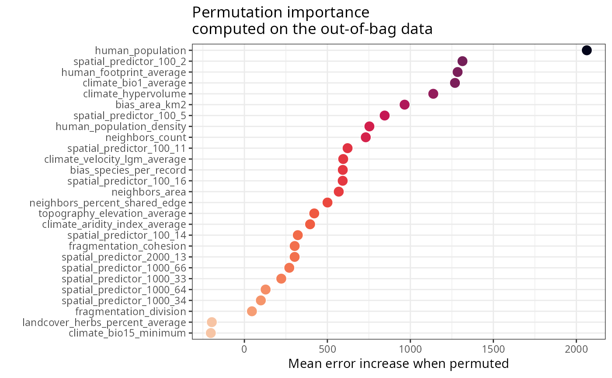
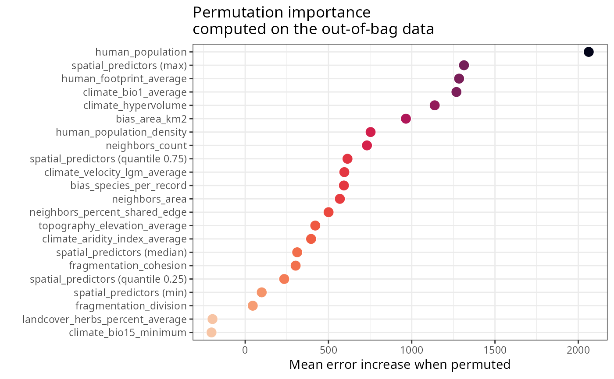
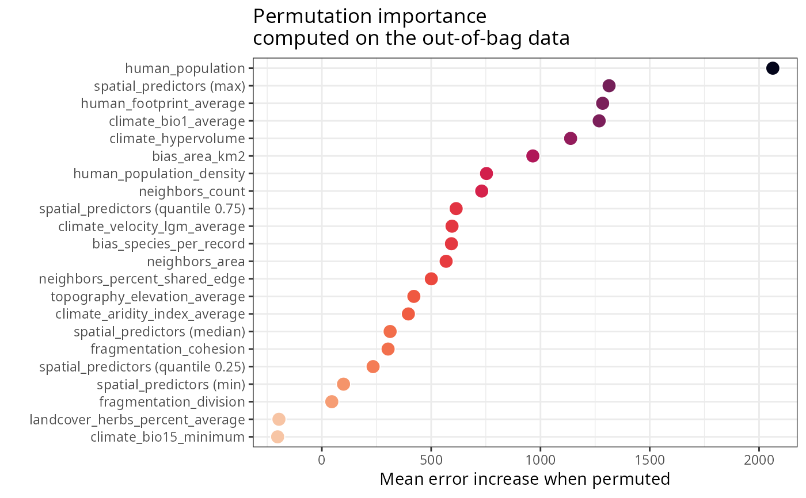

Prepares variable importance objects for spatial models
Source:R/prepare_importance_spatial.R
prepare_importance_spatial.RdPrepares variable importance data frames and plots for models fitted with rf_spatial().
Arguments
- model
An importance data frame with spatial predictors, or a model fitted with
rf_spatial().
Value
A list with importance data frames in different formats depending on whether the model was fitted with rf() or rf_repeat().
See also
Other utilities:
.vif_to_df(),
auc(),
beowulf_cluster(),
objects_size(),
optimization_function(),
rescale_vector(),
root_mean_squared_error(),
setup_parallel_execution(),
standard_error(),
statistical_mode(),
thinning(),
thinning_til_n()
Examples
data(plants_rf_spatial)
prepare_importance_spatial(plants_rf_spatial) %>%
head()
#> $per.variable
#> variable importance
#> 1 human_population 2062.953
#> 2 spatial_predictor_100_2 1313.871
#> 3 human_footprint_average 1284.529
#> 4 climate_bio1_average 1268.570
#> 5 climate_hypervolume 1138.002
#> 6 bias_area_km2 965.209
#> 7 spatial_predictor_100_5 845.060
#> 8 human_population_density 753.136
#> 9 neighbors_count 731.238
#> 10 spatial_predictor_100_11 621.663
#> 11 climate_velocity_lgm_average 595.414
#> 12 bias_species_per_record 592.786
#> 13 spatial_predictor_100_16 592.116
#> 14 neighbors_area 568.468
#> 15 neighbors_percent_shared_edge 500.680
#> 16 topography_elevation_average 420.887
#> 17 climate_aridity_index_average 395.820
#> 18 spatial_predictor_100_14 321.777
#> 19 fragmentation_cohesion 302.940
#> 20 spatial_predictor_2000_13 302.758
#> 21 spatial_predictor_1000_66 270.484
#> 22 spatial_predictor_1000_33 222.343
#> 23 spatial_predictor_1000_64 127.906
#> 24 spatial_predictor_1000_34 99.112
#> 25 fragmentation_division 45.441
#> 26 landcover_herbs_percent_average -196.250
#> 27 climate_bio15_minimum -202.283
#>
#> $per.variable.plot

#>
#> $spatial.predictors
#> variable importance
#> 2 spatial_predictors 1313.871
#> 7 spatial_predictors 845.060
#> 10 spatial_predictors 621.663
#> 13 spatial_predictors 592.116
#> 18 spatial_predictors 321.777
#> 20 spatial_predictors 302.758
#> 21 spatial_predictors 270.484
#> 22 spatial_predictors 222.343
#> 23 spatial_predictors 127.906
#> 24 spatial_predictors 99.112
#> 1 human_population 2062.953
#> 3 human_footprint_average 1284.529
#> 4 climate_bio1_average 1268.570
#> 5 climate_hypervolume 1138.002
#> 6 bias_area_km2 965.209
#> 8 human_population_density 753.136
#> 9 neighbors_count 731.238
#> 11 climate_velocity_lgm_average 595.414
#> 12 bias_species_per_record 592.786
#> 14 neighbors_area 568.468
#> 15 neighbors_percent_shared_edge 500.680
#> 16 topography_elevation_average 420.887
#> 17 climate_aridity_index_average 395.820
#> 19 fragmentation_cohesion 302.940
#> 25 fragmentation_division 45.441
#> 26 landcover_herbs_percent_average -196.250
#> 27 climate_bio15_minimum -202.283
#>
#> $spatial.predictors.plot
 #>
#> $spatial.predictors.stats
#> variable importance
#> 1 human_population 2062.9530
#> 13 spatial_predictors (max) 1313.8710
#> 3 human_footprint_average 1284.5290
#> 4 climate_bio1_average 1268.5700
#> 5 climate_hypervolume 1138.0020
#> 6 bias_area_km2 965.2090
#> 8 human_population_density 753.1360
#> 9 neighbors_count 731.2380
#> 51 spatial_predictors (quantile 0.75) 614.2763
#> 11 climate_velocity_lgm_average 595.4140
#> 12 bias_species_per_record 592.7860
#> 14 neighbors_area 568.4680
#> 15 neighbors_percent_shared_edge 500.6800
#> 16 topography_elevation_average 420.8870
#> 17 climate_aridity_index_average 395.8200
#> 31 spatial_predictors (median) 312.2675
#> 19 fragmentation_cohesion 302.9400
#> 41 spatial_predictors (quantile 0.25) 234.3782
#> 2 spatial_predictors (min) 99.1120
#> 25 fragmentation_division 45.4410
#> 26 landcover_herbs_percent_average -196.2500
#> 27 climate_bio15_minimum -202.2830
#>
#> $spatial.predictors.stats.plot

#>
#>
#> $spatial.predictors.stats
#> variable importance
#> 1 human_population 2062.9530
#> 13 spatial_predictors (max) 1313.8710
#> 3 human_footprint_average 1284.5290
#> 4 climate_bio1_average 1268.5700
#> 5 climate_hypervolume 1138.0020
#> 6 bias_area_km2 965.2090
#> 8 human_population_density 753.1360
#> 9 neighbors_count 731.2380
#> 51 spatial_predictors (quantile 0.75) 614.2763
#> 11 climate_velocity_lgm_average 595.4140
#> 12 bias_species_per_record 592.7860
#> 14 neighbors_area 568.4680
#> 15 neighbors_percent_shared_edge 500.6800
#> 16 topography_elevation_average 420.8870
#> 17 climate_aridity_index_average 395.8200
#> 31 spatial_predictors (median) 312.2675
#> 19 fragmentation_cohesion 302.9400
#> 41 spatial_predictors (quantile 0.25) 234.3782
#> 2 spatial_predictors (min) 99.1120
#> 25 fragmentation_division 45.4410
#> 26 landcover_herbs_percent_average -196.2500
#> 27 climate_bio15_minimum -202.2830
#>
#> $spatial.predictors.stats.plot

#>